Катально-зимушный сезон закрыт!
- 17-18 мая 2008 -
Если кратко, то дело было так. Собрались мы с Лёхой Иркутским на Мамай, чтобы зимуху к лету подготовить - разобрать и
спрятать печку, вытащить из окон стеклопакеты и тоже спрятать, на всякий случай. Ну и еще там всякие двери
и прочие штуки тоже решили убрать и спрятать, а то из кунга бичи каждое лето фанеру воруют, вдруг и до нас
дойдут, а это же не дело по осени по новой все заносить.
Ну и заодно можно взять сноуборды и закрыть мамайский сезон последним спуском :) А то Лёха же на Тальц на
закрытие не ходил, хоть на Мамае закрыть и отметить немного надо :)
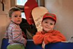
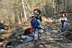
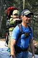
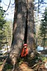
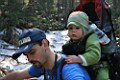
Накануне выяснилось, что Андрюшку на выходные оставить не с кем, так что я решил его взять с собой на Мамай,
а это значит надо велосипед взять, а то Андрюха ходить много не может, а если и сможет, то это долго и нудно. А
Лёхина жена Соня тоже захотела прогуляться, на "Нашу Машу" посмотреть. А потом они решили, что
материнскому сердцу будет спокойнее, когда ребенок будет рядом, и еще взяли маленького Тольку :)
Вот такой вот получился семейный выход на природу :)
Я Андрюшку на велосипеде полдороги прокатил (наверное, со стороны забавно смотрелось - еду на веле, на раме
ребенок, за спиной рюкзак и сноуборд), а Лёха Толяна всю дорогу нес в специальном детском рюкзаке
(подарок от брата). Снег на дороге еще лежит местами, речка поднялась, перебираться стало проблемно.
Возле зимухи начал мусор оттаивать, будем вечером устраивать субботник. А пока пообедали и пошли кататься.
Детей оставили под чутким руководством Сони, на солнечной сухой поляне, что вверх по склону возле кунга. В
кунге живет расхристанного вида дяденька, питается одной черемшой, потому что его друзья поехали продавать
урожай в Улан-Удэ и вот уже несколько дней не возвращаются (они и на следующий день не приехали, мы этому
дяденьке потом оставшиеся в зимухе продукты отдали).
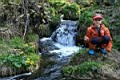
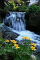
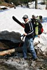
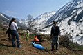
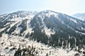
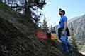
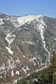
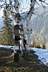
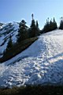
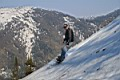
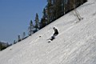
Ну так вот, поднялись мы на Три Березы, где по снегу, а где и по прошлогодней траве. И поееехали! По Большому
кулуару. А ехать-то уже совсем трудно. Снег уже не мягкий, весь пошел мелкой рябью, да еще и веток на нем
много, зимой ветром с елок сдувало, а они сейчас оттаяли. Не, на Тальце снег приятнее был. Это уже точно -
сезон надо закрывать! Накатались! Попрыгать-то еще можно, делов-то - нарыть на любом пятачке кочку и
колбаситься, а вот дуги на склоне резать уже не в кайф! Так что мы это дело вечером скромно отметили и
поставили точку в деле "Зима 07-08".
Дети в зимухе - это серьезное испытание для родительских нервов. У них глаза разбегаются от леса и вообще.
Андрюха лезет везде, а Толя за ним повторяет. Потом еще им всякие вещи друг у друга надо забирать. Короче,
непонимание возрастов полное. Ну, или частичное, иногда они дружно что-то делали, мусор в костер кидали и
прочее баловство :) Толя за эти выходные научился новым словам - ПУЛКА (полка), ЕК (снег), ИКА (речка), ПАУКА (палка).
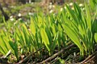
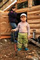
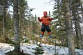
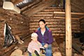
В воскресенье окончательно вынесли из зимухи все что можно и заныкали по кустам. Накрыли крышу баннером,
замаскировали ветками. Я потом вышел на главную тропу, а там компания собирателей зелени обедает, на полянке с
видом на зимуху. Короче, фиг че спрячешь :) надеемся на лучшее!
Да, мы с Андрюшкой даже немного выкатили на борде, потом доехали на веле до электрички (я его прятал в лесу,
возле шлагбаума), а вот Пестовы всей семейкой опоздали, но удачно застопили маршрутку "Улан-Удэ - Иркутск"
и быстро добрались до дома.
Лёха Слюдянский
Фото - май 2008
Текст - август 2008